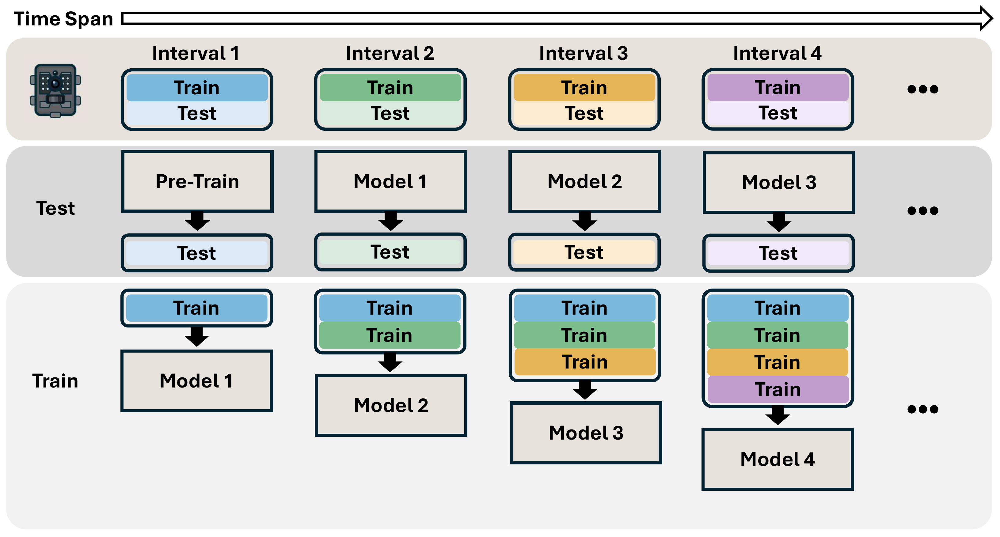

Even strong biological foundation models are not consistently reliable across deployments.
StreamTrap Benchmark
A realistic, large-scale benchmark for camera-trap species recognition over time
546
Camera Traps
17
Datasets (LILA BC)
3.2M+
Processed Images
5
Continents
6+
Months per Trap
How does streaming evaluation work?
Unlike conventional benchmarks where all target data is available at once, StreamTrap mirrors how camera traps operate in the field. At each interval, a model is updated on everything seen so far — then evaluated on the next unseen interval. This chronological train-then-test loop is what makes naive fine-tuning surprisingly fragile.

A benchmark built for diversity and difficulty
StreamTrap spans a wide range of conditions — from 6-month deployments to multi-year streams, from 5-class to 45-class ecosystems. The bottom row reveals the core challenge: high TCDS and extreme class imbalance are not edge cases but the norm.